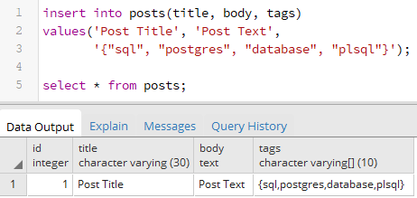
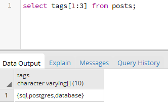
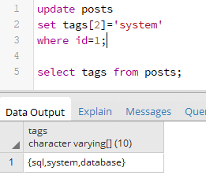

Вернуться на главную страницу →
Вернуться на главную страницу →
Составные типы данных
Массивы
Столбцы в таблице в PostgreSQL могут представлять массивы, например, массивы чисел INTEGER или массивы строк VARCHAR или массивы других типов данных. Рассмотрим, как работать с массивами в PostgreSQL.
Вначале определим простейшую таблицу:
Таблица posts будет хранить условные статьи, где столбец title хранит заголовок статьи, body - ее текст, а tags - список тегов статьи. Причем столбец tags представляет массив данных varchar(10), то есть строк. Для определения массива после названия типа указываются квадратные скобки.
Добавим в эту таблицу одну статью с набором тегов:
Массив определяется в кавычках, как и строка, но внутри кавычек все элементы массива помещаются в фигурные скобки. Каждый отдельный элемент массива заключается в двойные кавычки. То есть в данном случае в массиве четыре элемента: "sql", "postgres", "database" и "plsql".
Как и данные любого другого столбца, мы можем извлечь данные массива:
Однако с помощью индексов мы также можем конкретизировать, какие именно элементы массива мы хотим получить:
Индексы указываются в скобках через двоеточие. Вначале идет индекс начала диапазона, а затем индекс конца диапазона. То есть в данном случае извлекаем три тега с первого по третий.
При обновлении строки мы можем изменять как в целом все теги, так и какие-то конкретные теги. Например, удалим все теги:
Переустановим массив:
Переустановим конкретный элемент, например, второй:
